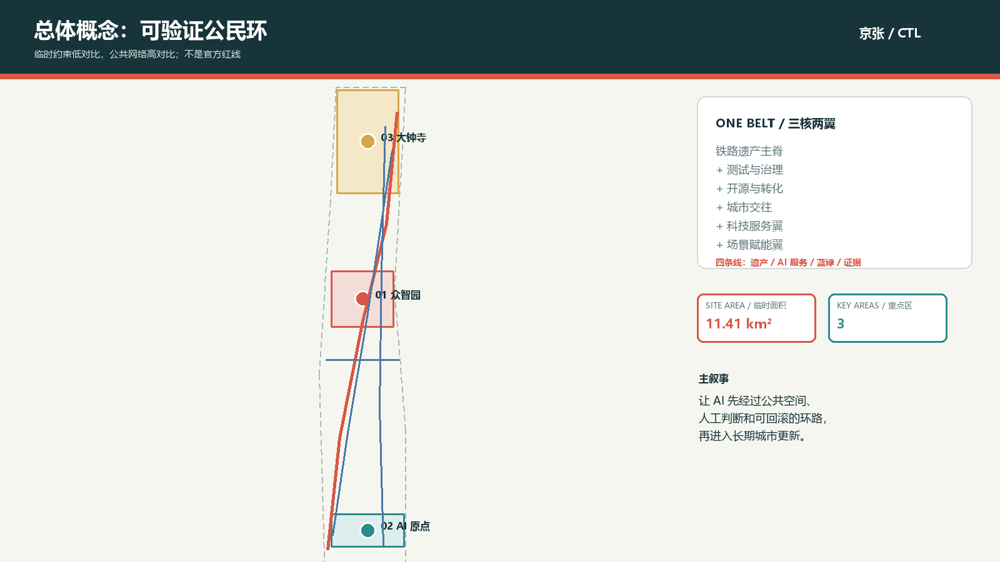
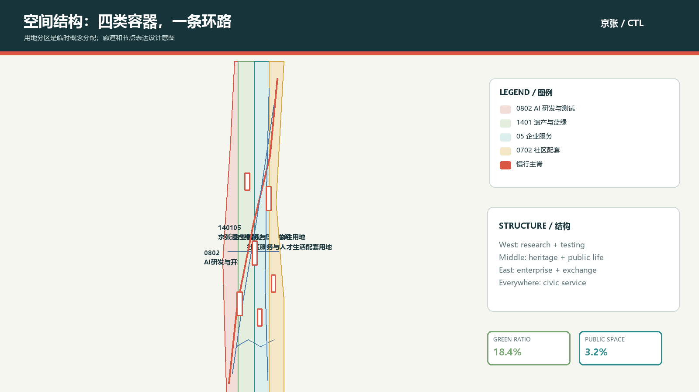
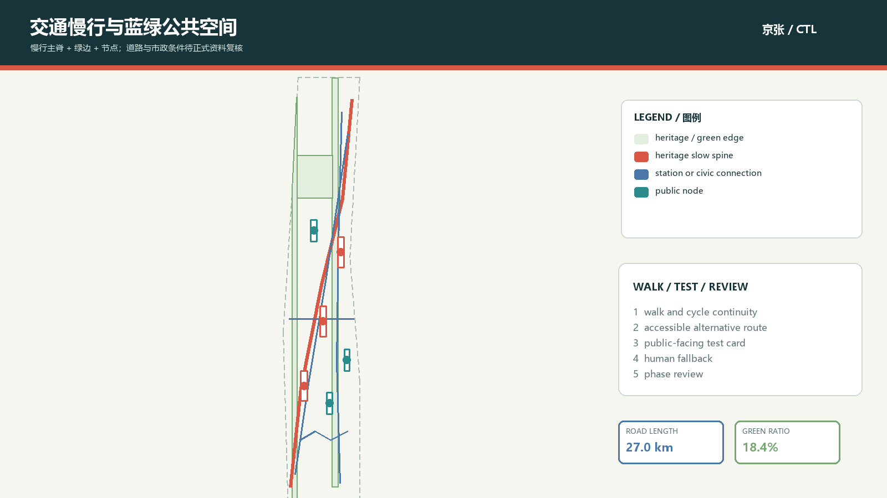
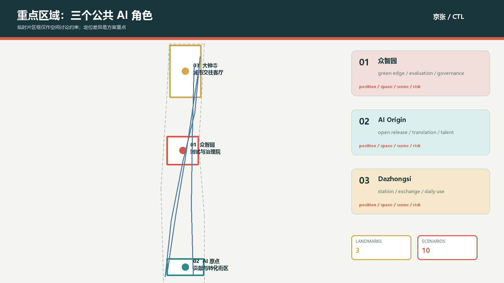

京张可验证公民环
一条把铁路记忆、AI 测试、公共服务和人工复核串起来的概念性城市设计回路
临时约束范围 · 已生成可复核方案包
官方 polygon 与控规条件待补齐。
官方 polygon 与控规条件待补齐。
总览地图

核心指标
site_area_sqm
11.41 km²
临时几何面积，非官方红线green_ratio
18.4%
设计图层比例public_space_ratio
3.2%
公共空间 unionai_scenario_count
10
其中 3 张产业测试卡三层范围
43.6 km² research
11.4 km² overall design
368.4 ha key-area reference
统筹研究—总体设计—重点区域共享同一条证据链。
重点区域
01 Zhongzhiyuan
02 AI Origin
03 Dazhongsi
三个片区分别承担测试治理、开源转化、城市交往。
用地分区

交通慢行 + 蓝绿公共空间

建筑 + 更新项目
建筑层只表达概念测试组团；保留、改造、更新和新建方向待现状、权属、文保与控规复核。
6 renewal projects
FAR pending
height pending
AI 场景
T-01 模型评测 · T-02 低碳算力 · T-03 无障碍慢行
每张卡都有来源、人工复核和退出路径。
重点区域

任务覆盖
公告 1.3、1.4、1.5 与 agent.1-agent.6 全覆盖。矩阵把章节、图层、指标、图纸、视觉段落、来源、假设与自检挂接。
自检状态
PASS · formal-review-ready
provisional geometry 保留为 minor 提醒；专业团队确认官方资料后需整体复算。
来源
公告、任务书、专业标准、临时边界与 7 个公开 AI 机制案例均登记在 sources.json。
假设
官方边界、控规、道路、文保、市政、权属和现状建筑资料待补齐；本页不把缺口隐藏成数字。